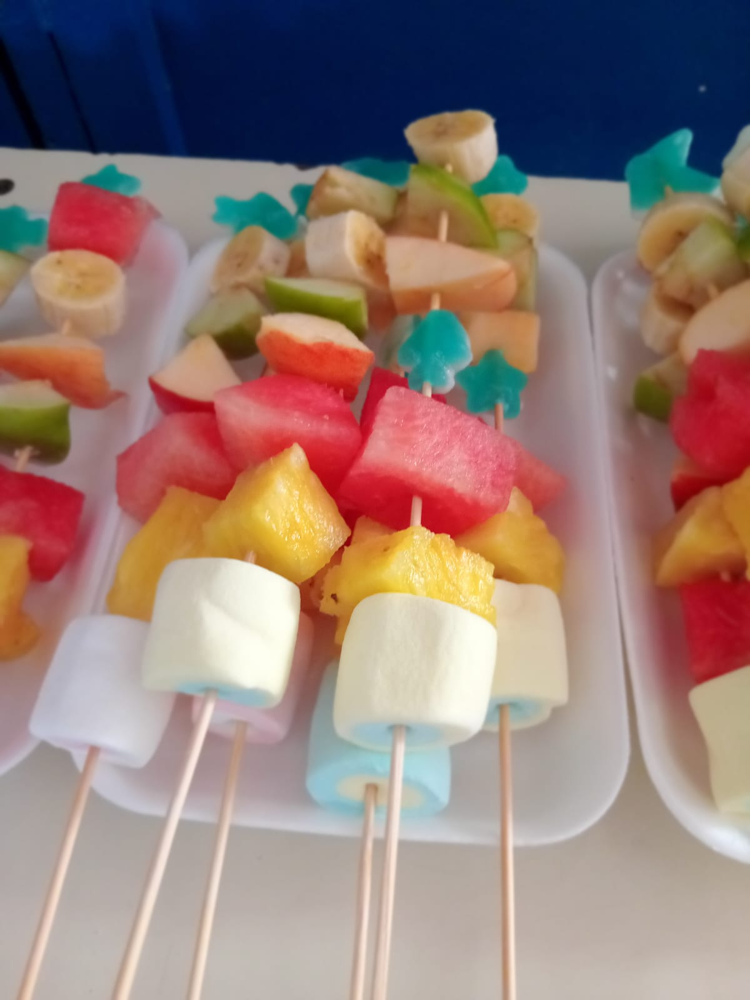
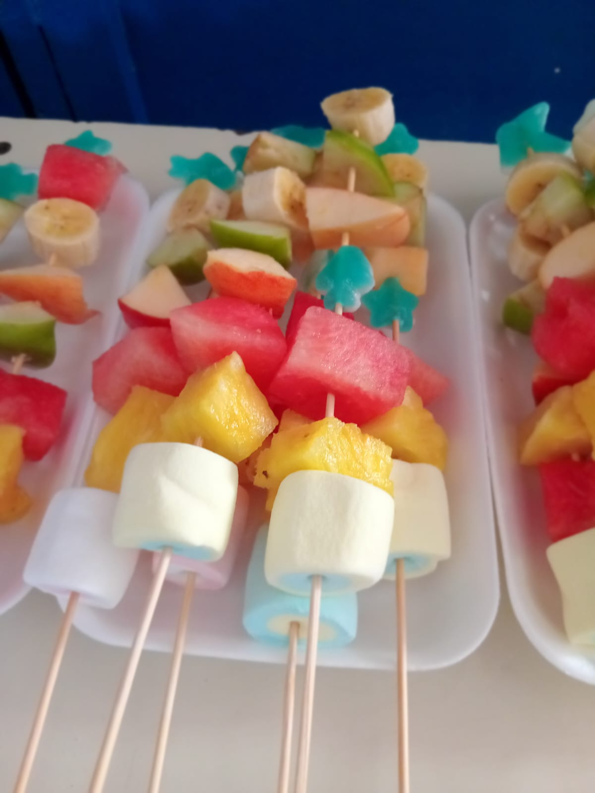

Pinchos de Frutas
🌟 Bienvenidos a Pinchos de Frutas, una propuesta deliciosa y natural para ti.

 

Nuestros Productos Destacados
Ofrecemos una variedad de pinchos de frutas frescas con combinaciones únicas:
- Pincho Dulce: Manzana, guineo, malvaviscos y gomitas
- Pincho Picante: Piña, sandía, chamoy y tajín
- Pincho Tropical: Mango, piña, coco y miel
- Pincho Energético: Frutos secos con frutas y chocolate
¡Todos nuestros productos son 100% naturales y preparados al momento!